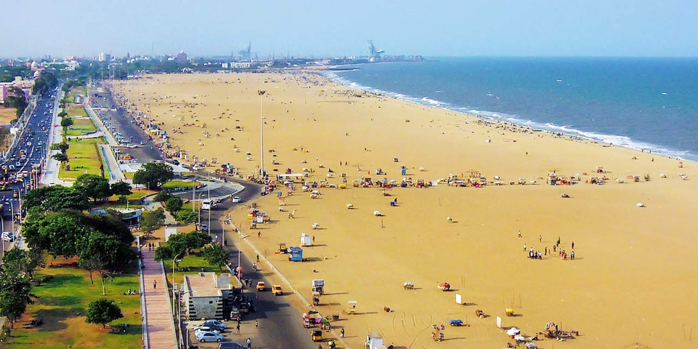
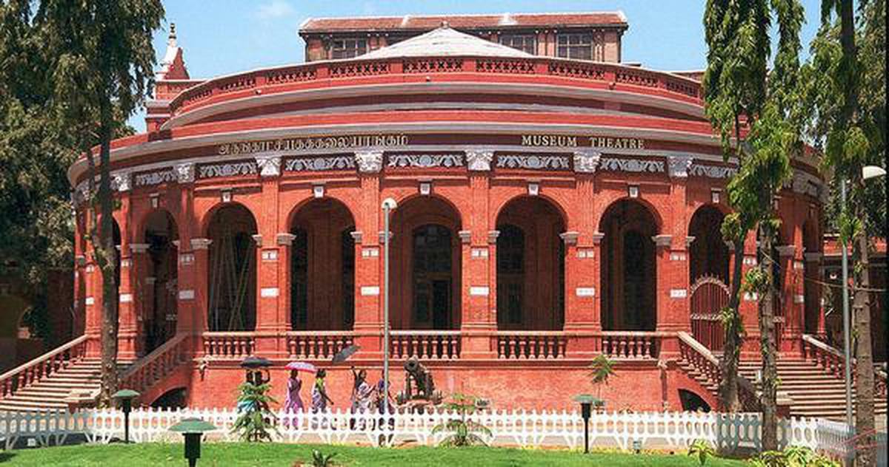

Mamallapuram, or Mahabalipuram, is a town on a strip of land between the Bay of Bengal and the Great Salt Lake, in the south Indian state of Tamil Nadu. It�s known for its temples and monuments built by the Pallava dynasty in the 7th and 8th centuries. The seafront Shore Temple comprises 3 ornate granite shrines. Krishna�s Butter Ball is a massive boulder balanced on a small hill near the Ganesha Ratha stone temple.
Marina Beach is a natural urban beach along the Bay of Bengal. The beach is stretched out to a distance of 13 kilometres making it the longest natural urban beach in the country, second largest in the world and also the most crowded beach in India with almost 30,000 visitors a day.
Government Museum was established in 1851 and is the second oldest museum in the country after the Indian Museum in Kolkata. Situated in Egmore suburb of Chennai, it is built in the Indo-Sarcenic style and houses a rich collection of the works of Raja Ravi Varma.